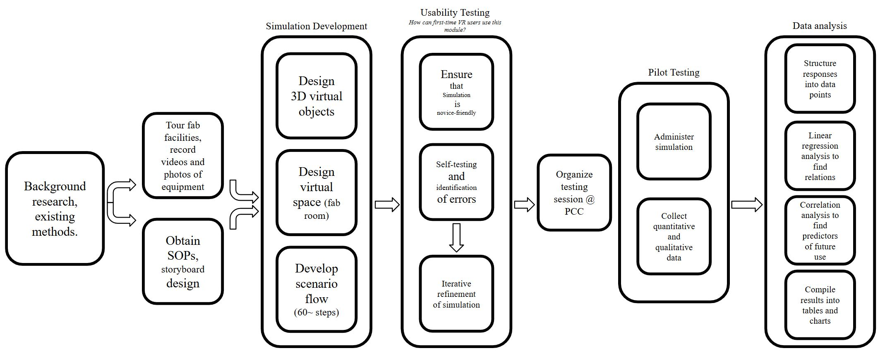

I've worked a few projects spanning from math, to coding and simulation, you can view some of them below:
Contents:
Abstract:
The nation is facing a critical shortage of semiconductor technicians, engineers, and scientists. A lack of student interest in semiconductor careers exacerbates this scarcity. This deficit is predicted to exceed 100,000 technician jobs by 2030, which threatens the progress of semiconductor manufacturing. There is an urgent need for innovative approaches to workforce training because traditional training methods alone are unable to meet the demand for skilled workers. VR simulations hold great potential for training, and AI capabilities can scaffold the learning process through large language model (LLM) powered tutors that provide personalized responses to students. However, such training typically requires multidisciplinary teams of programmers, 3D artists, and instructional designers, and complex software such as game engines. If such advanced training could be created by less skilled users using simpler software, then a vast amount of quality training would become available to help address the workforce challenges. Here, we investigate whether it is feasible for community college and K-12 students to create such VR simulations. We describe how the students in the author group designed and created an AI-powered VR simulation for a common semiconductor fabrication process and pilot-tested it to evaluate its effectiveness. Pilot test results show that students reported high levels of engagement, ease of use, and increased interest in and knowledge of semiconductor manufacturing. Linear regression analysis of the data revealed that engagement, ease of use, knowledge increase, and interest increase are significant predictors of the desire to use VR training in the future. These findings show that given well-designed software tools and expert mentoring, a team of community college and K-12 students can successfully produce engaging and effective VR training simulations. Our work suggests a nationally scalable approach to addressing the semiconductor workforce challenge while also training the next generation of VR simulation developers. To our knowledge, this is the first time K-12 and community college students have developed and evaluated VR simulations with high efficiency and engagement.
This work was published as:
Jha, I.. , Codina, G., Dong, A., Hong, K., Rodriguez, A., Chen, F., Zhu, J., & Li, G. P. (2025). AI-Powered VR Simulations for Semiconductor Industry Training and Education. Journal of Advanced Technological Education Center (J ATE), 4(1). https://doi.org/10.1038/s41598-024-61040-3